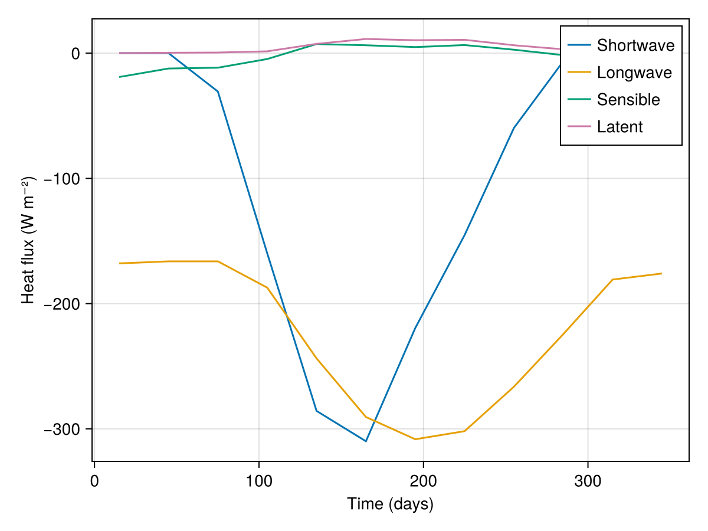
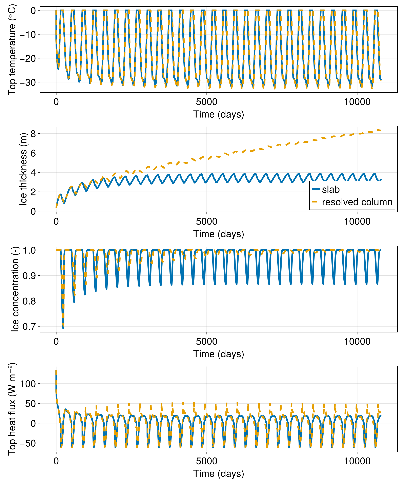

Arctic basin seasonal cycle example
This example reproduces results from Semtner (1976), which simulates the seasonal cycle of sea ice in the Arctic basin. The model uses climatological forcing data from Fletcher (1965) for shortwave radiation, longwave radiation, sensible heat flux, and latent heat flux. This example demonstrates how to:
- use time-varying climatological forcing data,
- set up seasonal cycles with
FieldTimeSeriesand cyclical indexing, - combine multiple heat flux components,
- simulate multi-year seasonal cycles.
Install dependencies
First let's make sure we have all required packages installed.
using Pkg
pkg"add Oceananigans, ClimaSeaIce, CairoMakie"The physical domain
We use a single grid point to model a horizontally uniform ice column:
using Oceananigans
using Oceananigans.Units
using Oceananigans.Units: Time
using ClimaSeaIce
using ClimaSeaIce.SeaIceThermodynamics: prescribed_salinity_enthalpy_thermodynamics,
SeaIceColumnDiscretization,
ConductiveTemperatureTransport,
IceWaterThermalEquilibrium
import ClimaSeaIce.SeaIceThermodynamics: initialize_column_interfaces!
using CairoMakie
grid = RectilinearGrid(size=(), topology=(Flat, Flat, Flat))1×1×1 RectilinearGrid{Float64, Flat, Flat, Flat} on CPU with 0×0×0 halo
├── Flat x
├── Flat y
└── Flat z Climatological forcing data
The forcing data comes from Semtner (1976, table 1), originally tabulated by Fletcher (1965). Note: these are in kcal, which was deprecated in the ninth General Conference on Weights and Measures in 1948. We convert these to Joules (and then to Watts) below.
Month: Jan Feb Mar Apr May Jun Jul Aug Sep Oct Nov Dec
tabulated_shortwave = - [ 0, 0, 1.9, 9.9, 17.7, 19.2, 13.6, 9.0, 3.7, 0.4, 0, 0] .* 1e4 # kcal m⁻²
tabulated_longwave = - [10.4, 10.3, 10.3, 11.6, 15.1, 18.0, 19.1, 18.7, 16.5, 13.9, 11.2, 10.9] .* 1e4 # kcal m⁻²
tabulated_sensible = - [1.18, 0.76, 0.72, 0.29, -0.45, -0.39, -0.30, -0.40, -0.17, 0.1, 0.56, 0.79] .* 1e4 # kcal m⁻²
tabulated_latent = - [ 0, -0.02, -0.03, -0.09, -0.46, -0.70, -0.64, -0.66, -0.39, -0.19, -0.01, -0.01] .* 1e4 # kcal m⁻²12-element Vector{Float64}:
-0.0
200.0
300.0
900.0
4600.0
7000.0
6400.0
6600.0
3900.0
1900.0
100.0
100.0We assume every month has 30 days and set up the time array:
Nmonths = 12
month_days = 30
year_days = month_days * Nmonths
times_days = 15:30:(year_days - 15)
times = times_days .* day # times in seconds1.296e6:2.592e6:2.9808e7Sea ice emissivity:
ϵ = 11Convert fluxes to the right units (W m⁻²):
kcal_to_joules = 4184
tabulated_shortwave .*= kcal_to_joules / (month_days * days)
tabulated_longwave .*= kcal_to_joules / (month_days * days) .* ϵ
tabulated_sensible .*= kcal_to_joules / (month_days * days)
tabulated_latent .*= kcal_to_joules / (month_days * days)12-element Vector{Float64}:
-0.0
0.3228395061728395
0.4842592592592593
1.452777777777778
7.425308641975309
11.299382716049383
10.330864197530865
10.653703703703703
6.295370370370371
3.0669753086419753
0.16141975308641976
0.16141975308641976Let's visualize the forcing data:
fig = Figure()
ax = Axis(fig[1, 1], xlabel="Time (days)", ylabel="Heat flux (W m⁻²)")
lines!(ax, times ./ day, tabulated_shortwave, label="Shortwave")
lines!(ax, times ./ day, tabulated_longwave, label="Longwave")
lines!(ax, times ./ day, tabulated_sensible, label="Sensible")
lines!(ax, times ./ day, tabulated_latent, label="Latent")
axislegend(ax)
Creating time-varying flux functions
We create FieldTimeSeries objects with cyclical indexing so the forcing repeats annually:
Rs = FieldTimeSeries{Nothing, Nothing, Nothing}(grid, times; time_indexing = Oceananigans.OutputReaders.Cyclical())
Rl = FieldTimeSeries{Nothing, Nothing, Nothing}(grid, times; time_indexing = Oceananigans.OutputReaders.Cyclical())
Qs = FieldTimeSeries{Nothing, Nothing, Nothing}(grid, times; time_indexing = Oceananigans.OutputReaders.Cyclical())
Ql = FieldTimeSeries{Nothing, Nothing, Nothing}(grid, times; time_indexing = Oceananigans.OutputReaders.Cyclical())
for (i, time) in enumerate(times)
set!(Rs[i], tabulated_shortwave[i:i])
set!(Rl[i], tabulated_longwave[i:i])
set!(Qs[i], tabulated_sensible[i:i])
set!(Ql[i], tabulated_latent[i:i])
endWe define flux functions that linearly interpolate the time series:
@inline function linearly_interpolate_flux(i, j, grid, Tₛ, clock, model_fields, flux)
t = Time(clock.time)
return flux[i, j, 1, t]
endlinearly_interpolate_flux (generic function with 1 method)For shortwave radiation, we account for surface albedo:
@inline function linearly_interpolate_solar_flux(i, j, grid, Tₛ, clock, model_fields, flux)
Q = linearly_interpolate_flux(i, j, grid, Tₛ, clock, model_fields, flux)
α = ifelse(Tₛ < -0.1, 0.75, 0.64) # albedo depends on surface temperature
return Q * (1 - α)
endlinearly_interpolate_solar_flux (generic function with 1 method)Semtner (1976) uses a wrong value for the Stefan-Boltzmann constant (roughly 2% higher) to match the results of Maykut & Untersteiner (1965). We use here the same value here for comparison purposes.
σ = 5.67e-8 * 1.02 # Wrong value, but used for comparison!5.7834e-8We create flux functions for each component:
Q_shortwave = FluxFunction(linearly_interpolate_solar_flux, parameters=Rs)
Q_longwave = FluxFunction(linearly_interpolate_flux, parameters=Rl)
Q_sensible = FluxFunction(linearly_interpolate_flux, parameters=Qs)
Q_latent = FluxFunction(linearly_interpolate_flux, parameters=Ql)
Q_emission = RadiativeEmission(emissivity=ϵ, stefan_boltzmann_constant=σ)RadiativeEmission(emissivity = Float64, stefan_boltzmann_constant = Float64, reference_temperature = Float64)We combine all top heat fluxes:
top_heat_flux = (Q_shortwave, Q_longwave, Q_sensible, Q_latent, Q_emission)(FluxFunction of linearly_interpolate_solar_flux (generic function with 1 method) with parameters 1×1×1×12 FieldTimeSeries{Oceananigans.OutputReaders.InMemory} located at (⋅, ⋅, ⋅) on Oceananigans.Architectures.CPU, FluxFunction of linearly_interpolate_flux (generic function with 1 method) with parameters 1×1×1×12 FieldTimeSeries{Oceananigans.OutputReaders.InMemory} located at (⋅, ⋅, ⋅) on Oceananigans.Architectures.CPU, FluxFunction of linearly_interpolate_flux (generic function with 1 method) with parameters 1×1×1×12 FieldTimeSeries{Oceananigans.OutputReaders.InMemory} located at (⋅, ⋅, ⋅) on Oceananigans.Architectures.CPU, FluxFunction of linearly_interpolate_flux (generic function with 1 method) with parameters 1×1×1×12 FieldTimeSeries{Oceananigans.OutputReaders.InMemory} located at (⋅, ⋅, ⋅) on Oceananigans.Architectures.CPU, RadiativeEmission(emissivity = Float64, stefan_boltzmann_constant = Float64, reference_temperature = Float64))Building the model
We assemble the model and initialize it with 30 cm of ice at full concentration:
model = SeaIceModel(grid; top_heat_flux)
set!(model, h=0.3, ℵ=1) # Start from 30 cm of ice and full concentrationRunning the simulation
We run the simulation for 30 years with an 8-hour time step:
simulation = Simulation(model, Δt=8hours, stop_time=30 * 360days)Simulation of SeaIceModel
├── Next time step: 8 hours
├── run_wall_time: 0 seconds
├── run_wall_time / iteration: NaN days
├── stop_time: 10800 days
├── stop_iteration: Inf
├── wall_time_limit: Inf
├── minimum_relative_step: 0.0
├── callbacks: OrderedDict with 3 entries:
│ ├── stop_time_exceeded => Callback of stop_time_exceeded on IterationInterval(1)
│ ├── stop_iteration_exceeded => Callback of stop_iteration_exceeded on IterationInterval(1)
│ └── wall_time_limit_exceeded => Callback of wall_time_limit_exceeded on IterationInterval(1)
└── output_writers: OrderedDict with no entriesCollecting data
We set up a callback to accumulate time series data:
series = []
function accumulate_timeseries(sim)
T = model.ice_thermodynamics.top_surface_temperature
h = model.ice_thickness
ℵ = model.ice_concentration
Qe = model.external_heat_fluxes.top
Qe = ClimaSeaIce.SeaIceThermodynamics.HeatBoundaryConditions.getflux(Qe, 1, 1, grid, first(T), model.clock, model.ice_thickness)
push!(series, (time(sim), first(h), first(T), first(ℵ), Qe))
end
simulation.callbacks[:save] = Callback(accumulate_timeseries)
run!(simulation)[ Info: Initializing simulation...
[ Info: ... simulation initialization complete (2.047 seconds)
[ Info: Executing initial time step...
[ Info: ... initial time step complete (1.490 seconds).
[ Info: Simulation is stopping after running for 8.514 seconds.
[ Info: Simulation time 10800 days equals or exceeds stop time 10800 days.Visualizing the results
We extract the time series data and visualize the evolution:
t = [datum[1] for datum in series]
h = [datum[2] for datum in series]
T = [datum[3] for datum in series]
ℵ = [datum[4] for datum in series]
Q = [datum[5] for datum in series]32401-element Vector{Float64}:
134.21854592640608
80.79890192059372
80.02282782591206
79.27010314543628
78.53955795658916
77.83010385010343
77.14072670595868
76.47048024173361
75.81848023714602
75.18389935219409
⋮
17.6278587275269
17.62296462958048
17.61807699440726
17.61319581542017
17.608321085829886
17.603452798651517
17.598590946713927
17.59373552266669
17.588886518987835Comparison with the resolved column thermodynamics
ColumnEnergyThermodynamics reads the same top_heat_flux, so we drive a vertically-resolved column with the identical climatological forcing (the time series are horizontally uniform, so the same flux tuple applies) and an ice–water equilibrium base. The resolved column reproduces the same seasonal cycle as the zero-dimensional slab; small differences reflect the column's resolved internal heat storage.
column_grid = RectilinearGrid(size=16, z=SeaIceColumnDiscretization((0, 4)), topology=(Flat, Flat, Bounded))
column_thermodynamics = evolving_salinity_mushy_thermodynamics(column_grid;
energy_transport = ConductiveTemperatureTransport(conductivity = 2),
heat_boundary_conditions = (top = MeltingConstrainedFluxBalance(),
bottom = IceWaterThermalEquilibrium(salinity = 0)))
column_model = SeaIceModel(column_grid; ice_thermodynamics = column_thermodynamics, top_heat_flux)
set!(column_model, h=0.3, ℵ=1)
initialize_column_interfaces!(column_grid, column_model.ice_thickness)
set!(column_thermodynamics; bulk_salinity = 0, temperature = -5)
column_simulation = Simulation(column_model, Δt=8hours, stop_time=30 * 360days)
column_series = []
function accumulate_column(sim)
Tc = sim.model.ice_thermodynamics.auxiliary.surface_temperature
h = sim.model.ice_thickness
ℵ = sim.model.ice_concentration
Qe = sim.model.external_heat_fluxes.top
Qe = ClimaSeaIce.SeaIceThermodynamics.HeatBoundaryConditions.getflux(Qe, 1, 1, sim.model.grid, first(Tc), sim.model.clock, sim.model.ice_thickness)
push!(column_series, (time(sim), first(h), first(Tc), first(ℵ), Qe))
end
column_simulation.callbacks[:save] = Callback(accumulate_column)
run!(column_simulation)
tc = [datum[1] for datum in column_series]
hc = [datum[2] for datum in column_series]
Tc = [datum[3] for datum in column_series]
ℵc = [datum[4] for datum in column_series]
Qc = [datum[5] for datum in column_series]
set_theme!(Theme(fontsize=24, linewidth=4))
fig = Figure(size=(1000, 1200))
axT = Axis(fig[1, 1], xlabel="Time (days)", ylabel="Top temperature (ᵒC)")
axh = Axis(fig[2, 1], xlabel="Time (days)", ylabel="Ice thickness (m)")
axℵ = Axis(fig[3, 1], xlabel="Time (days)", ylabel="Ice concentration (-)")
axQ = Axis(fig[4, 1], xlabel="Time (days)", ylabel="Top heat flux (W m⁻²)")
lines!(axT, t ./ day, T, label="slab")
lines!(axT, tc ./ day, Tc, linestyle=:dash, label="resolved column")
lines!(axh, t ./ day, h, label="slab")
lines!(axh, tc ./ day, hc, linestyle=:dash, label="resolved column")
lines!(axℵ, t ./ day, ℵ, label="slab")
lines!(axℵ, tc ./ day, ℵc, linestyle=:dash, label="resolved column")
lines!(axQ, t ./ day, Q, label="slab")
lines!(axQ, tc ./ day, Qc, linestyle=:dash, label="resolved column")
axislegend(axh, position=:rb)
save("ice_timeseries.png", fig)[ Info: Initializing simulation...
[ Info: ... simulation initialization complete (3.501 seconds)
[ Info: Executing initial time step...
[ Info: ... initial time step complete (21.261 seconds).
[ Info: Simulation is stopping after running for 53.059 seconds.
[ Info: Simulation time 10800 days equals or exceeds stop time 10800 days.
The results show the seasonal cycle of sea ice, with ice growing in winter and melting in summer. After several years, the model reaches a quasi-equilibrium seasonal cycle.
This page was generated using Literate.jl.